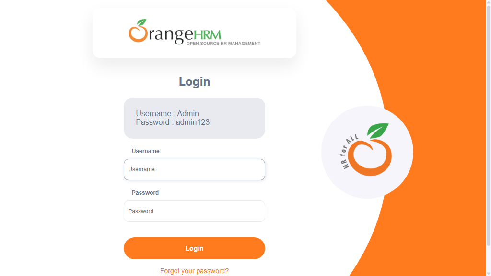

-
sampleTest3_user1_20-07-50
8:07:51 PM / 00:00:15:043 Fail
sampleTest3_user1_20-07-50
09.06.2026 8:07:51 PM 09.06.2026 8:08:06 PM 00:00:15:043 · #test-id=1Status Timestamp Details Skip 8:08:06 PM Test Skipped Fail 8:08:06 PM -
sampleTest1_user1_20-07-50
8:07:51 PM / 00:00:15:504 Fail
sampleTest1_user1_20-07-50
09.06.2026 8:07:51 PM 09.06.2026 8:08:07 PM 00:00:15:504 · #test-id=2Status Timestamp Details Skip 8:08:06 PM Test Skipped Fail 8:08:06 PM Info 8:08:07 PM 📂 Logs: Info 8:08:07 PM 📄 sampleTest1_user1_20-07-50.log -
sampleTest_user1_20-07-50
8:07:51 PM / 00:00:15:494 Fail
sampleTest_user1_20-07-50
09.06.2026 8:07:51 PM 09.06.2026 8:08:07 PM 00:00:15:494 · #test-id=3Status Timestamp Details Skip 8:08:06 PM Test Skipped Fail 8:08:06 PM Info 8:08:07 PM 📂 Logs: Info 8:08:07 PM 📄 sampleTest_user1_20-07-50.log -
sampleTest2_user1_20-07-51
8:07:51 PM / 00:00:14:843 Fail
sampleTest2_user1_20-07-51
09.06.2026 8:07:51 PM 09.06.2026 8:08:06 PM 00:00:14:843 · #test-id=4Status Timestamp Details Skip 8:08:06 PM Test Skipped Fail 8:08:06 PM -
sampleTest_user1_20-08-11
8:08:11 PM / 00:00:18:370 Fail
sampleTest_user1_20-08-11
09.06.2026 8:08:11 PM 09.06.2026 8:08:29 PM 00:00:18:370 · #test-id=5Status Timestamp Details Skip 8:08:29 PM Test Skipped Fail 8:08:29 PM Info 8:08:29 PM 📂 Logs: Info 8:08:29 PM 📄 sampleTest_user1_20-08-11.log -
sampleTest2_user1_20-08-11
8:08:11 PM / 00:00:18:131 Fail
sampleTest2_user1_20-08-11
09.06.2026 8:08:11 PM 09.06.2026 8:08:29 PM 00:00:18:131 · #test-id=6Status Timestamp Details Skip 8:08:29 PM Test Skipped Fail 8:08:29 PM -
sampleTest1_user1_20-08-11
8:08:11 PM / 00:00:17:982 Fail
sampleTest1_user1_20-08-11
09.06.2026 8:08:11 PM 09.06.2026 8:08:29 PM 00:00:17:982 · #test-id=7Status Timestamp Details Skip 8:08:29 PM Test Skipped Fail 8:08:29 PM Info 8:08:29 PM 📂 Logs: Info 8:08:29 PM 📄 sampleTest1_user1_20-08-11.log -
sampleTest3_user1_20-08-15
8:08:15 PM / 00:00:14:203 Fail
sampleTest3_user1_20-08-15
09.06.2026 8:08:15 PM 09.06.2026 8:08:29 PM 00:00:14:203 · #test-id=8Status Timestamp Details Skip 8:08:29 PM Test Skipped Fail 8:08:29 PM -
sampleTest_user1_20-08-33
8:08:33 PM / 00:00:17:244 Fail
sampleTest_user1_20-08-33
09.06.2026 8:08:33 PM 09.06.2026 8:08:50 PM 00:00:17:244 · #test-id=9Status Timestamp Details Fail 8:08:50 PM Info 8:08:50 PM 📂 Logs: Info 8:08:50 PM 📄 sampleTest_user1_20-08-33.log -
sampleTest1_user1_20-08-33
8:08:33 PM / 00:00:17:224 Fail
sampleTest1_user1_20-08-33
09.06.2026 8:08:33 PM 09.06.2026 8:08:50 PM 00:00:17:224 · #test-id=10Status Timestamp Details Fail 8:08:50 PM Info 8:08:50 PM 📂 Logs: Info 8:08:50 PM 📄 sampleTest1_user1_20-08-33.log -
sampleTest3_user1_20-08-33
8:08:33 PM / 00:00:17:445 Fail
sampleTest3_user1_20-08-33
09.06.2026 8:08:33 PM 09.06.2026 8:08:51 PM 00:00:17:445 · #test-id=11Status Timestamp Details Fail 8:08:51 PM -
sampleTest2_user1_20-08-33
8:08:33 PM / 00:00:16:900 Fail
sampleTest2_user1_20-08-33
09.06.2026 8:08:33 PM 09.06.2026 8:08:50 PM 00:00:16:900 · #test-id=12Status Timestamp Details Fail 8:08:50 PM -
sampleTest2_user2_20-08-52
8:08:52 PM / 00:00:23:521 Fail
sampleTest2_user2_20-08-52
09.06.2026 8:08:52 PM 09.06.2026 8:09:16 PM 00:00:23:521 · #test-id=13Status Timestamp Details Skip 8:09:16 PM Test Skipped Fail 8:09:16 PM -
sampleTest_user2_20-08-52
8:08:52 PM / 00:00:23:395 Fail
sampleTest_user2_20-08-52
09.06.2026 8:08:52 PM 09.06.2026 8:09:16 PM 00:00:23:395 · #test-id=14Status Timestamp Details Skip 8:09:16 PM Test Skipped Fail 8:09:16 PM Info 8:09:16 PM 📂 Logs: Info 8:09:16 PM 📄 sampleTest_user2_20-08-52.log -
sampleTest1_user2_20-08-52
8:08:52 PM / 00:00:23:378 Fail
sampleTest1_user2_20-08-52
09.06.2026 8:08:52 PM 09.06.2026 8:09:16 PM 00:00:23:378 · #test-id=15Status Timestamp Details Skip 8:09:16 PM Test Skipped Fail 8:09:16 PM Info 8:09:16 PM 📂 Logs: Info 8:09:16 PM 📄 sampleTest1_user2_20-08-52.log -
sampleTest3_user2_20-08-58
8:08:58 PM / 00:00:17:766 Fail
sampleTest3_user2_20-08-58
09.06.2026 8:08:58 PM 09.06.2026 8:09:16 PM 00:00:17:766 · #test-id=16Status Timestamp Details Skip 8:09:16 PM Test Skipped Fail 8:09:16 PM -
sampleTest2_user2_20-09-20
8:09:20 PM / 00:00:24:843 Fail
sampleTest2_user2_20-09-20
09.06.2026 8:09:20 PM 09.06.2026 8:09:45 PM 00:00:24:843 · #test-id=17Status Timestamp Details Skip 8:09:45 PM Test Skipped Fail 8:09:45 PM -
sampleTest3_user2_20-09-20
8:09:20 PM / 00:00:24:851 Fail
sampleTest3_user2_20-09-20
09.06.2026 8:09:20 PM 09.06.2026 8:09:45 PM 00:00:24:851 · #test-id=18Status Timestamp Details Skip 8:09:45 PM Test Skipped Fail 8:09:45 PM -
sampleTest_user2_20-09-20
8:09:20 PM / 00:00:24:845 Fail
sampleTest_user2_20-09-20
09.06.2026 8:09:20 PM 09.06.2026 8:09:45 PM 00:00:24:845 · #test-id=19Status Timestamp Details Skip 8:09:45 PM Test Skipped Fail 8:09:45 PM Info 8:09:45 PM 📂 Logs: Info 8:09:45 PM 📄 sampleTest_user2_20-09-20.log -
sampleTest1_user2_20-09-20
8:09:20 PM / 00:00:24:826 Fail
sampleTest1_user2_20-09-20
09.06.2026 8:09:20 PM 09.06.2026 8:09:45 PM 00:00:24:826 · #test-id=20Status Timestamp Details Skip 8:09:45 PM Test Skipped Fail 8:09:45 PM Info 8:09:45 PM 📂 Logs: Info 8:09:45 PM 📄 sampleTest1_user2_20-09-20.log -
sampleTest1_user2_20-09-48
8:09:48 PM / 00:00:18:957 Fail
sampleTest1_user2_20-09-48
09.06.2026 8:09:48 PM 09.06.2026 8:10:07 PM 00:00:18:957 · #test-id=21Status Timestamp Details Fail 8:10:07 PM Info 8:10:07 PM 📂 Logs: Info 8:10:07 PM 📄 sampleTest1_user2_20-09-48.log -
sampleTest3_user2_20-09-48
8:09:48 PM / 00:00:18:932 Fail
sampleTest3_user2_20-09-48
09.06.2026 8:09:48 PM 09.06.2026 8:10:07 PM 00:00:18:932 · #test-id=22Status Timestamp Details Fail 8:10:07 PM -
sampleTest2_user2_20-09-48
8:09:48 PM / 00:00:18:801 Fail
sampleTest2_user2_20-09-48
09.06.2026 8:09:48 PM 09.06.2026 8:10:07 PM 00:00:18:801 · #test-id=23Status Timestamp Details Fail 8:10:07 PM -
sampleTest_user2_20-09-51
8:09:51 PM / 00:00:16:118 Fail
sampleTest_user2_20-09-51
09.06.2026 8:09:51 PM 09.06.2026 8:10:07 PM 00:00:16:118 · #test-id=24Status Timestamp Details Fail 8:10:07 PM Info 8:10:07 PM 📂 Logs: Info 8:10:07 PM 📄 sampleTest_user2_20-09-51.log -
sampleTest5_user1_20-10-11
8:10:11 PM / 00:00:17:433 Fail
sampleTest5_user1_20-10-11
09.06.2026 8:10:11 PM 09.06.2026 8:10:29 PM 00:00:17:433 · #test-id=25Status Timestamp Details Skip 8:10:29 PM Test Skipped Fail 8:10:29 PM -
sampleTest4_user1_20-10-12
8:10:12 PM / 00:00:16:761 Fail
sampleTest4_user1_20-10-12
09.06.2026 8:10:12 PM 09.06.2026 8:10:29 PM 00:00:16:761 · #test-id=26Status Timestamp Details Skip 8:10:29 PM Test Skipped Fail 8:10:29 PM -
verifyLoginTest1_user1_20-10-12
8:10:12 PM / 00:00:16:481 Fail
verifyLoginTest1_user1_20-10-12
09.06.2026 8:10:12 PM 09.06.2026 8:10:29 PM 00:00:16:481 · #test-id=27Status Timestamp Details Skip 8:10:29 PM Test Skipped Fail 8:10:29 PM Info 8:10:29 PM 📸 Screenshots: Info 8:10:29 PM 
-
verifyLoginTest_{COL1=ONE}_20-10-14
8:10:14 PM / 00:00:14:722 Fail
verifyLoginTest_{COL1=ONE}_20-10-14
09.06.2026 8:10:14 PM 09.06.2026 8:10:29 PM 00:00:14:722 · #test-id=28Status Timestamp Details Skip 8:10:29 PM Test Skipped Fail 8:10:29 PM Info 8:10:29 PM 📂 Logs: Info 8:10:29 PM 📄 verifyLoginTest_{COL1=ONE}_20-10-14.log Info 8:10:29 PM 📸 Screenshots: Info 8:10:29 PM 
-
verifyLoginTest_{COL1=ONE}_20-10-32
8:10:32 PM / 00:00:19:180 Fail
verifyLoginTest_{COL1=ONE}_20-10-32
09.06.2026 8:10:32 PM 09.06.2026 8:10:51 PM 00:00:19:180 · #test-id=29Status Timestamp Details Skip 8:10:51 PM Test Skipped Fail 8:10:51 PM Info 8:10:51 PM 📂 Logs: Info 8:10:51 PM 📄 verifyLoginTest_{COL1=ONE}_20-10-32.log Info 8:10:51 PM 📸 Screenshots: Info 8:10:51 PM 
-
sampleTest5_user1_20-10-32
8:10:32 PM / 00:00:16:736 Fail
sampleTest5_user1_20-10-32
09.06.2026 8:10:32 PM 09.06.2026 8:10:49 PM 00:00:16:736 · #test-id=30Status Timestamp Details Skip 8:10:49 PM Test Skipped Fail 8:10:49 PM -
verifyLoginTest1_user1_20-10-32
8:10:32 PM / 00:00:17:702 Fail
verifyLoginTest1_user1_20-10-32
09.06.2026 8:10:32 PM 09.06.2026 8:10:50 PM 00:00:17:702 · #test-id=31Status Timestamp Details Skip 8:10:50 PM Test Skipped Fail 8:10:50 PM Info 8:10:50 PM 📸 Screenshots: Info 8:10:50 PM 
-
sampleTest4_user1_20-10-33
8:10:33 PM / 00:00:16:408 Fail
sampleTest4_user1_20-10-33
09.06.2026 8:10:33 PM 09.06.2026 8:10:49 PM 00:00:16:408 · #test-id=32Status Timestamp Details Skip 8:10:49 PM Test Skipped Fail 8:10:49 PM -
sampleTest5_user1_20-10-50
8:10:50 PM / 00:00:17:767 Fail
sampleTest5_user1_20-10-50
09.06.2026 8:10:50 PM 09.06.2026 8:11:07 PM 00:00:17:767 · #test-id=33Status Timestamp Details Fail 8:11:07 PM -
sampleTest4_user1_20-10-51
8:10:51 PM / 00:00:17:697 Fail
sampleTest4_user1_20-10-51
09.06.2026 8:10:51 PM 09.06.2026 8:11:09 PM 00:00:17:697 · #test-id=34Status Timestamp Details Fail 8:11:09 PM -
verifyLoginTest1_user1_20-10-53
8:10:53 PM / 00:00:15:951 Fail
verifyLoginTest1_user1_20-10-53
09.06.2026 8:10:53 PM 09.06.2026 8:11:09 PM 00:00:15:951 · #test-id=35Status Timestamp Details Fail 8:11:09 PM Info 8:11:09 PM 📸 Screenshots: Info 8:11:09 PM 
-
verifyLoginTest_{COL1=ONE}_20-10-54
8:10:54 PM / 00:00:14:263 Fail
verifyLoginTest_{COL1=ONE}_20-10-54
09.06.2026 8:10:54 PM 09.06.2026 8:11:09 PM 00:00:14:263 · #test-id=36Status Timestamp Details Fail 8:11:09 PM Info 8:11:09 PM 📂 Logs: Info 8:11:09 PM 📄 verifyLoginTest_{COL1=ONE}_20-10-54.log Info 8:11:09 PM 📸 Screenshots: Info 8:11:09 PM 
-
sampleTest5_user2_20-11-09
8:11:09 PM / 00:00:17:925 Fail
sampleTest5_user2_20-11-09
09.06.2026 8:11:09 PM 09.06.2026 8:11:27 PM 00:00:17:925 · #test-id=37Status Timestamp Details Skip 8:11:27 PM Test Skipped Fail 8:11:27 PM -
verifyLoginTest_{COL1=ONEONE}_20-11-12
8:11:12 PM / 00:00:16:893 Fail
verifyLoginTest_{COL1=ONEONE}_20-11-12
09.06.2026 8:11:12 PM 09.06.2026 8:11:29 PM 00:00:16:893 · #test-id=38Status Timestamp Details Skip 8:11:29 PM Test Skipped Fail 8:11:29 PM Info 8:11:29 PM 📂 Logs: Info 8:11:29 PM 📄 verifyLoginTest_{COL1=ONEONE}_20-11-12.log Info 8:11:29 PM 📸 Screenshots: Info 8:11:29 PM 
-
sampleTest4_user2_20-11-12
8:11:12 PM / 00:00:14:926 Fail
sampleTest4_user2_20-11-12
09.06.2026 8:11:12 PM 09.06.2026 8:11:27 PM 00:00:14:926 · #test-id=39Status Timestamp Details Skip 8:11:27 PM Test Skipped Fail 8:11:27 PM -
verifyLoginTest1_user2_20-11-12
8:11:12 PM / 00:00:15:920 Fail
verifyLoginTest1_user2_20-11-12
09.06.2026 8:11:12 PM 09.06.2026 8:11:28 PM 00:00:15:920 · #test-id=40Status Timestamp Details Skip 8:11:28 PM Test Skipped Fail 8:11:28 PM Info 8:11:28 PM 📸 Screenshots: Info 8:11:28 PM 
-
sampleTest4_user2_20-11-28
8:11:28 PM / 00:00:20:244 Fail
sampleTest4_user2_20-11-28
09.06.2026 8:11:28 PM 09.06.2026 8:11:49 PM 00:00:20:244 · #test-id=41Status Timestamp Details Skip 8:11:49 PM Test Skipped Fail 8:11:49 PM -
sampleTest5_user2_20-11-28
8:11:28 PM / 00:00:20:208 Fail
sampleTest5_user2_20-11-28
09.06.2026 8:11:28 PM 09.06.2026 8:11:49 PM 00:00:20:208 · #test-id=42Status Timestamp Details Skip 8:11:49 PM Test Skipped Fail 8:11:49 PM -
verifyLoginTest1_user2_20-11-31
8:11:31 PM / 00:00:17:757 Fail
verifyLoginTest1_user2_20-11-31
09.06.2026 8:11:31 PM 09.06.2026 8:11:49 PM 00:00:17:757 · #test-id=43Status Timestamp Details Skip 8:11:49 PM Test Skipped Fail 8:11:49 PM Info 8:11:49 PM 📸 Screenshots: Info 8:11:49 PM 
-
verifyLoginTest_{COL1=ONEONE}_20-11-33
8:11:33 PM / 00:00:16:063 Fail
verifyLoginTest_{COL1=ONEONE}_20-11-33
09.06.2026 8:11:33 PM 09.06.2026 8:11:49 PM 00:00:16:063 · #test-id=44Status Timestamp Details Skip 8:11:49 PM Test Skipped Fail 8:11:49 PM Info 8:11:49 PM 📂 Logs: Info 8:11:49 PM 📄 verifyLoginTest_{COL1=ONEONE}_20-11-33.log Info 8:11:49 PM 📸 Screenshots: Info 8:11:49 PM 
-
sampleTest4_user2_20-11-51
8:11:51 PM / 00:00:19:090 Fail
sampleTest4_user2_20-11-51
09.06.2026 8:11:51 PM 09.06.2026 8:12:10 PM 00:00:19:090 · #test-id=45Status Timestamp Details Fail 8:12:10 PM -
sampleTest5_user2_20-11-51
8:11:51 PM / 00:00:19:089 Fail
sampleTest5_user2_20-11-51
09.06.2026 8:11:51 PM 09.06.2026 8:12:10 PM 00:00:19:089 · #test-id=46Status Timestamp Details Fail 8:12:10 PM -
verifyLoginTest_{COL1=ONEONE}_20-11-52
8:11:52 PM / 00:00:16:694 Fail
verifyLoginTest_{COL1=ONEONE}_20-11-52
09.06.2026 8:11:52 PM 09.06.2026 8:12:09 PM 00:00:16:694 · #test-id=47Status Timestamp Details Fail 8:12:09 PM Info 8:12:09 PM 📂 Logs: Info 8:12:09 PM 📄 verifyLoginTest_{COL1=ONEONE}_20-11-52.log Info 8:12:09 PM 📸 Screenshots: Info 8:12:09 PM 
-
verifyLoginTest1_user2_20-11-54
8:11:54 PM / 00:00:17:247 Fail
verifyLoginTest1_user2_20-11-54
09.06.2026 8:11:54 PM 09.06.2026 8:12:11 PM 00:00:17:247 · #test-id=48Status Timestamp Details Fail 8:12:11 PM Info 8:12:11 PM 📸 Screenshots: Info 8:12:11 PM 
-
verifyLoginTest2_user1_20-12-10
8:12:10 PM / 00:00:14:025 Fail
verifyLoginTest2_user1_20-12-10
09.06.2026 8:12:10 PM 09.06.2026 8:12:24 PM 00:00:14:025 · #test-id=49Status Timestamp Details Skip 8:12:24 PM Test Skipped Fail 8:12:24 PM Info 8:12:24 PM 📂 Logs: Info 8:12:24 PM 📄 verifyLoginTest2_user1_20-12-10.log -
verifyLoginTest2_user1_20-12-28
8:12:28 PM / 00:00:13:628 Fail
verifyLoginTest2_user1_20-12-28
09.06.2026 8:12:28 PM 09.06.2026 8:12:41 PM 00:00:13:628 · #test-id=50Status Timestamp Details Skip 8:12:41 PM Test Skipped Fail 8:12:41 PM Info 8:12:41 PM 📂 Logs: Info 8:12:41 PM 📄 verifyLoginTest2_user1_20-12-28.log -
verifyLoginTest2_user1_20-12-42
8:12:42 PM / 00:00:12:635 Fail
verifyLoginTest2_user1_20-12-42
09.06.2026 8:12:42 PM 09.06.2026 8:12:55 PM 00:00:12:635 · #test-id=51Status Timestamp Details Fail 8:12:55 PM Info 8:12:55 PM 📂 Logs: Info 8:12:55 PM 📄 verifyLoginTest2_user1_20-12-42.log -
verifyLoginTest2_user2_20-12-56
8:12:56 PM / 00:00:12:852 Fail
verifyLoginTest2_user2_20-12-56
09.06.2026 8:12:56 PM 09.06.2026 8:13:09 PM 00:00:12:852 · #test-id=52Status Timestamp Details Skip 8:13:09 PM Test Skipped Fail 8:13:09 PM Info 8:13:09 PM 📂 Logs: Info 8:13:09 PM 📄 verifyLoginTest2_user2_20-12-56.log -
verifyLoginTest2_user2_20-13-18
8:13:18 PM / 00:00:12:793 Fail
verifyLoginTest2_user2_20-13-18
09.06.2026 8:13:18 PM 09.06.2026 8:13:31 PM 00:00:12:793 · #test-id=53Status Timestamp Details Skip 8:13:31 PM Test Skipped Fail 8:13:31 PM Info 8:13:31 PM 📂 Logs: Info 8:13:31 PM 📄 verifyLoginTest2_user2_20-13-18.log -
verifyLoginTest2_user2_20-13-32
8:13:32 PM / 00:00:12:931 Fail
verifyLoginTest2_user2_20-13-32
09.06.2026 8:13:32 PM 09.06.2026 8:13:45 PM 00:00:12:931 · #test-id=54Status Timestamp Details Fail 8:13:45 PM Info 8:13:45 PM 📂 Logs: Info 8:13:45 PM 📄 verifyLoginTest2_user2_20-13-32.log
-
org.openqa.selenium.TimeoutException
54 tests
org.openqa.selenium.TimeoutException
54 failed
Started
Sep 6, 2026 08:07:31 PM
Ended
Sep 6, 2026 08:13:45 PM
Tests Passed
0
Tests Failed
54
Tests
Log events
Timeline